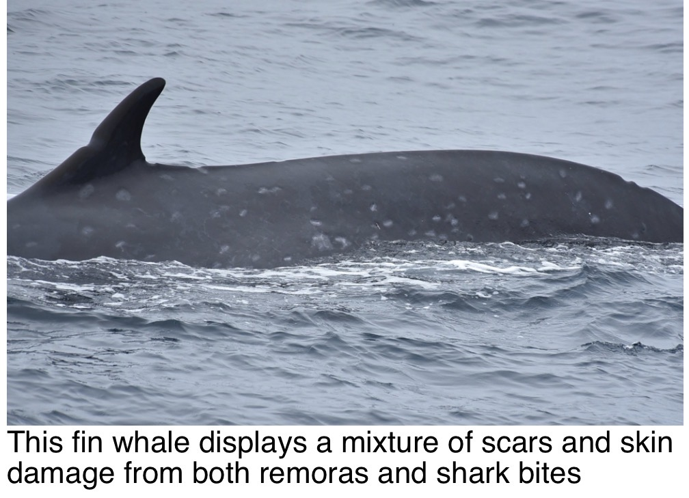
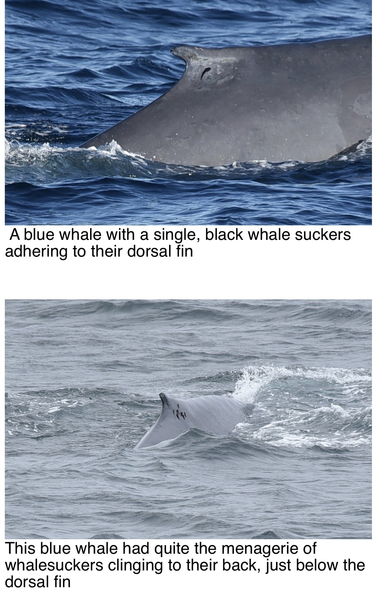
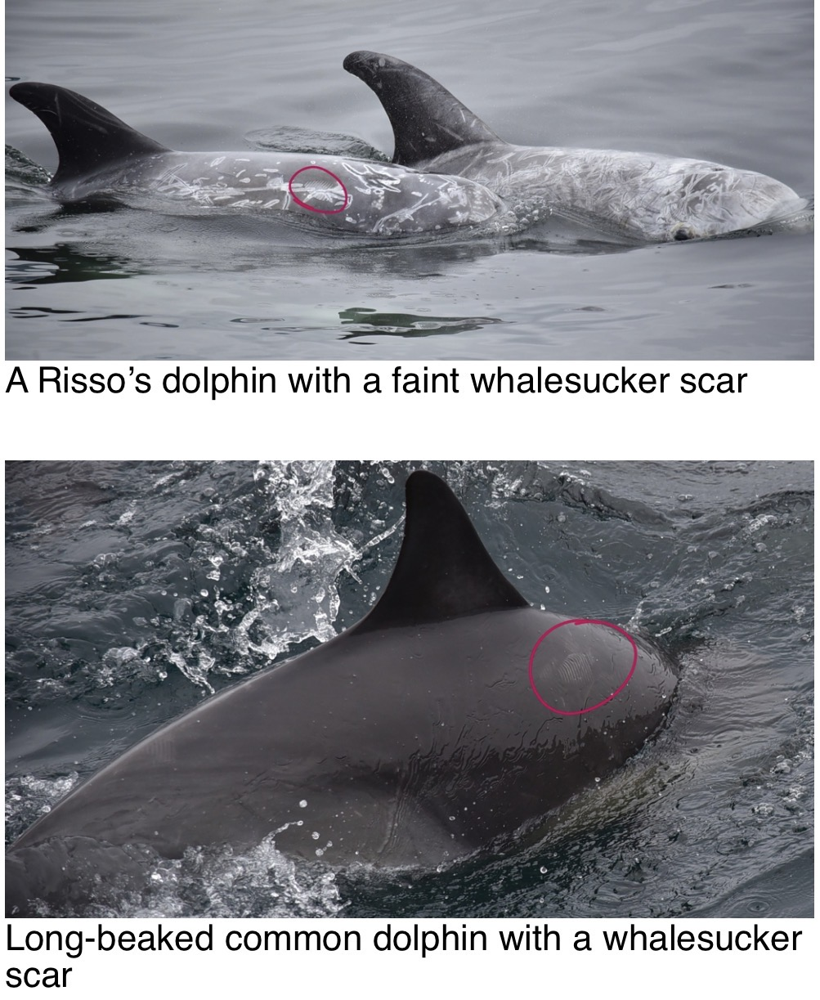
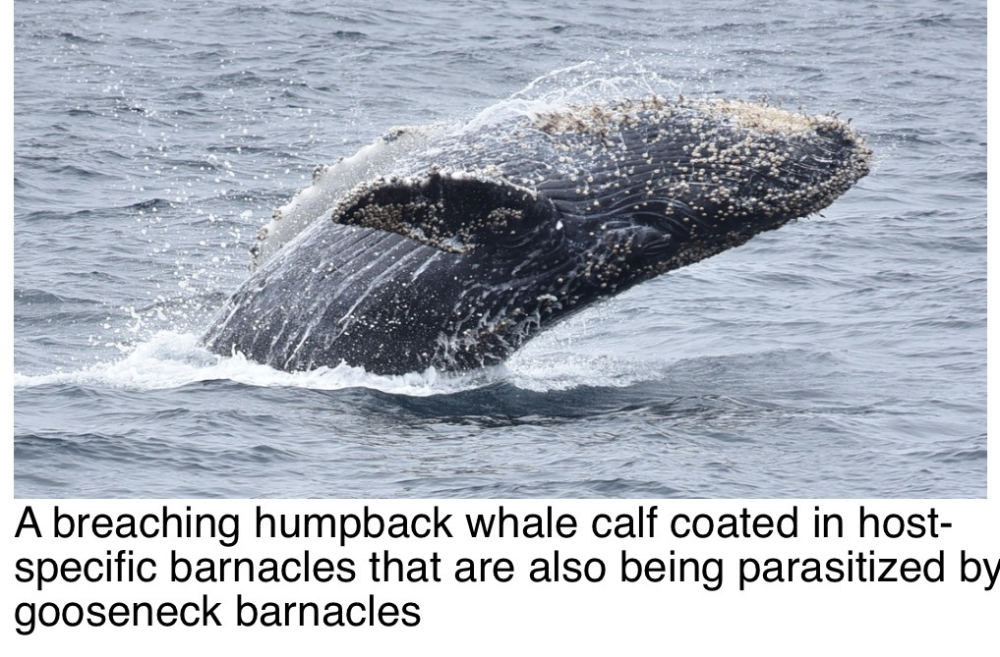
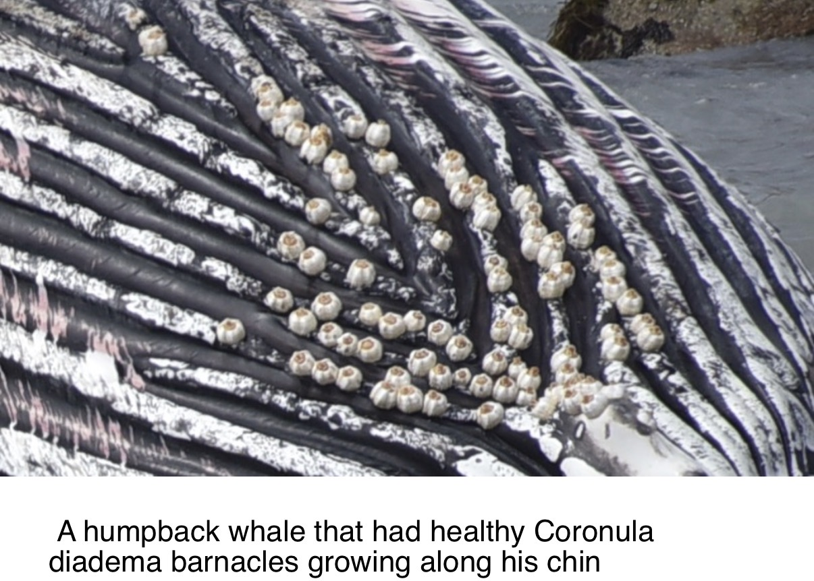
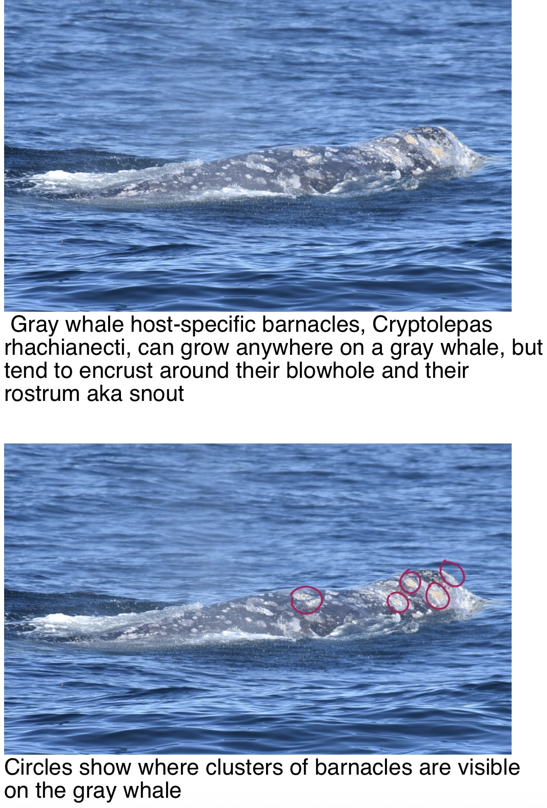
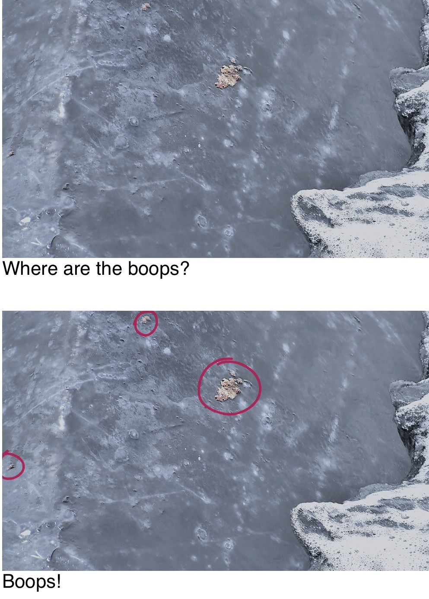
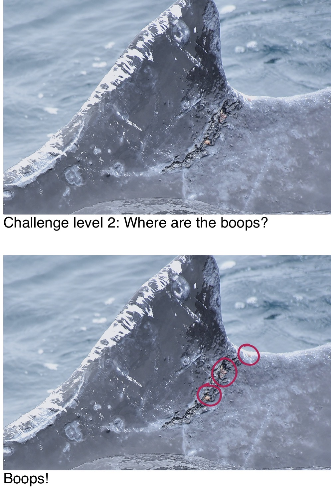

Whales carry organisms that feed, shelter, travel and reproduce on or around them. Not all associations are true parasitism: some are commensal or mutualistic. This guide preserves the June 18–24 Naturalist Field Note's interpretations and photographs.
Cookiecutter sharks
Smalltooth cookiecutter sharks (Isistius brasiliensis) leave circular bites and scars on whales and many other marine animals.

Fin whale with round scars and skin damage.
Whalesuckers
Whalesuckers (Remora australis) attach to whales with a suction disk derived from a dorsal fin. They can remove dead skin and other organisms; prolonged attachment may also leave scars.

Blue whales with whalesuckers.
Whalesucker scars on dolphins
Remora attachment marks may be visible even when the fish has departed.

Risso’s dolphin and long-beaked common dolphin showing attachment scars.
Whale barnacles
Coronula diadema is strongly associated with humpbacks; Coronula reginae occurs on multiple baleen whales. Rabbit-ear gooseneck barnacles (Conchoderma auritum) may grow on whale barnacles.

Breaching humpback calf covered in barnacles.
Humpback chin barnacles
Barnacles can accumulate along the grooves and chin of humpbacks.

Humpback chin with Coronula diadema.
Gray whale barnacles
Cryptolepas rhachianecti occurs on gray whales, particularly around the rostrum and blowhole.

Gray whale original and annotated views.
Whale lice — find the boops
Cyamus boopis is a crustacean, not an insect. Whale lice live on their hosts and can graze on algae and dead skin.

Challenge 1 and annotated answer.
Whale lice — challenge level 2
Look for small whale lice around scars and crevices; the second view reveals their positions.

Challenge 2 and annotated answer.
Source
Naturalist Field Note, June 18–24, 2026. All eight image composites are preserved as supplied, including captions and annotated answer pairs.